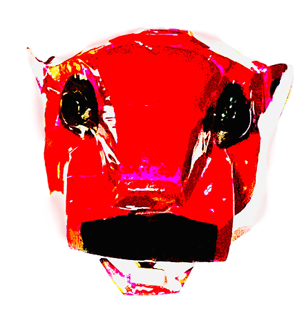
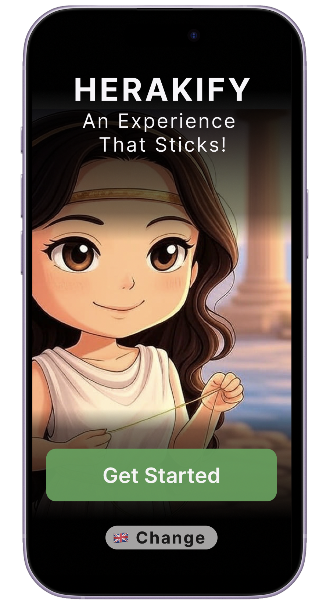
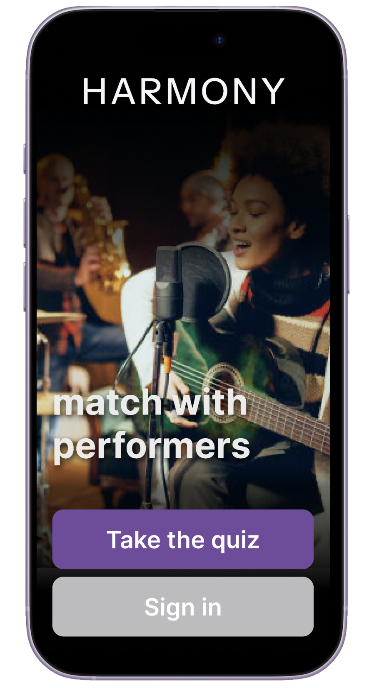
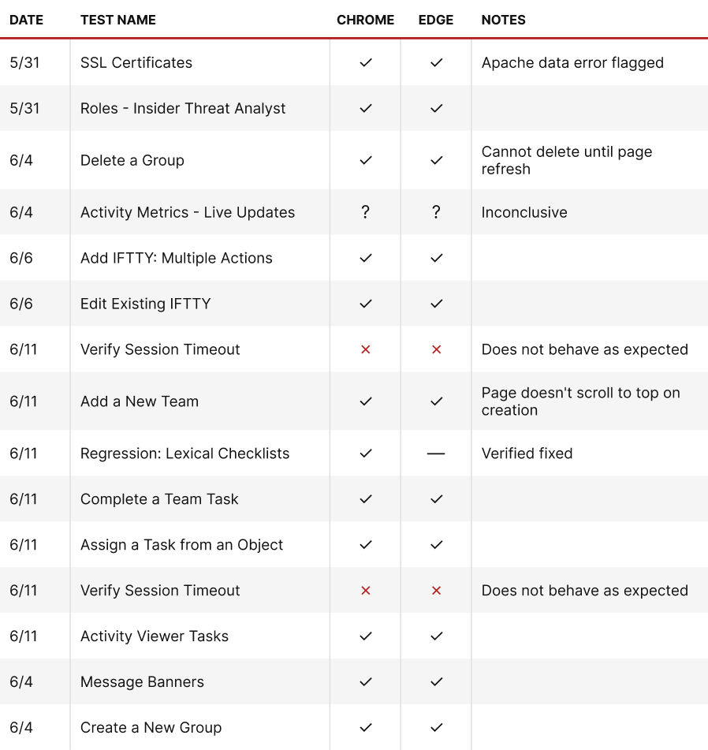
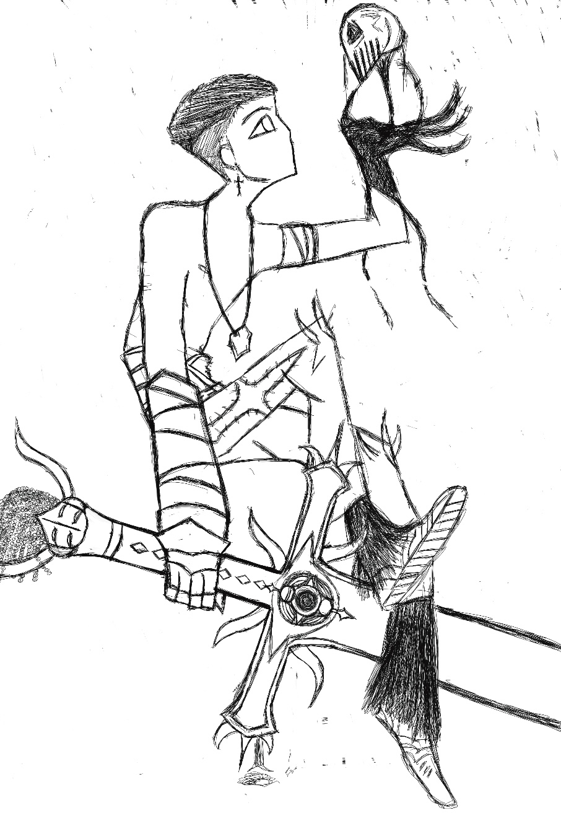

Spencer Lewis is a recent Computer Science graduate from the University of Virginia. My mission is to use storytelling to design useful and inspiring products and media.

Tourists in Heraklion lacked a way to meaningfully engage with museum exhibits beyond static displays. Through 15+ user research sessions, I designed and prototyped a high-fidelity mobile app with personalized quizzes, interactive maps, and an AI chat — iterating on every feature until it was clear and intuitive.
More Info ›
Passionate about music, I designed a high-fidelity mobile prototype for a social platform built around musical connection — featuring a personalized quiz, artist profiles, chat, and collaboration tools.
More Info ›
Gaps in test coverage were creating release risk for a growing enterprise product. I executed 500+ tests across regression, integration, and feature validation workflows, contributed to automation efforts, and helped establish documentation standards that made the team’s process more reliable and repeatable.
More Info ›
Driven by a passion for film and drawing, I’ve developed skills across a variety of mediums including 2D and 3D animation, digital art, and more — building an appreciation for the tools that make impactful media possible.
More Info ›